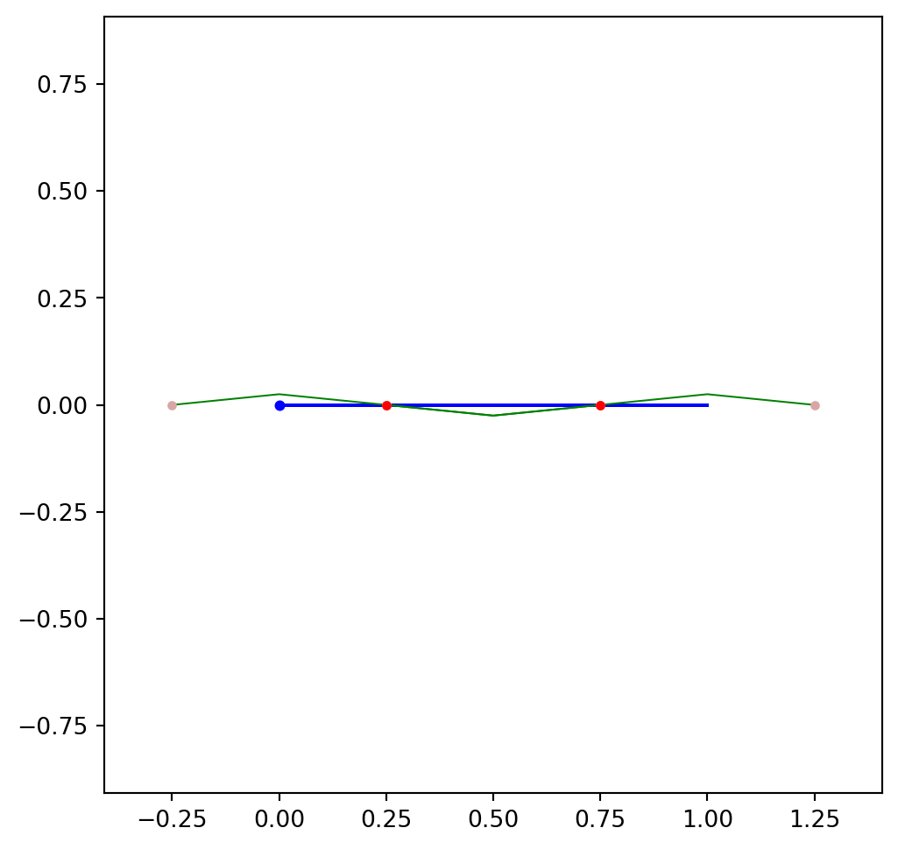
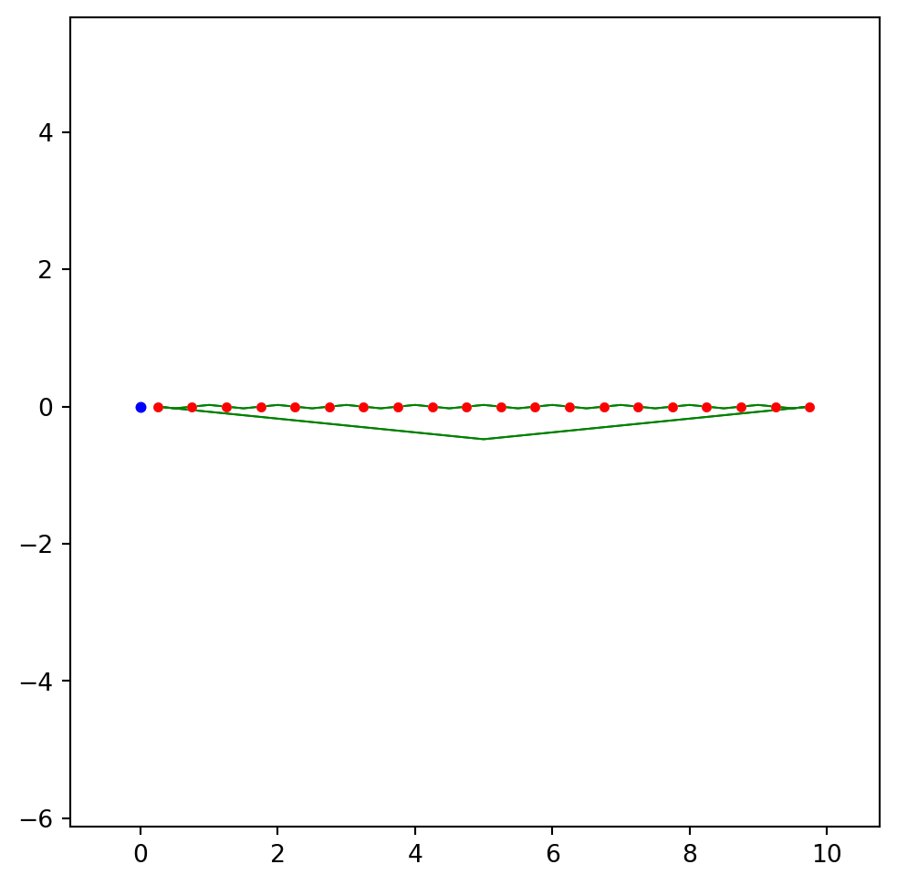
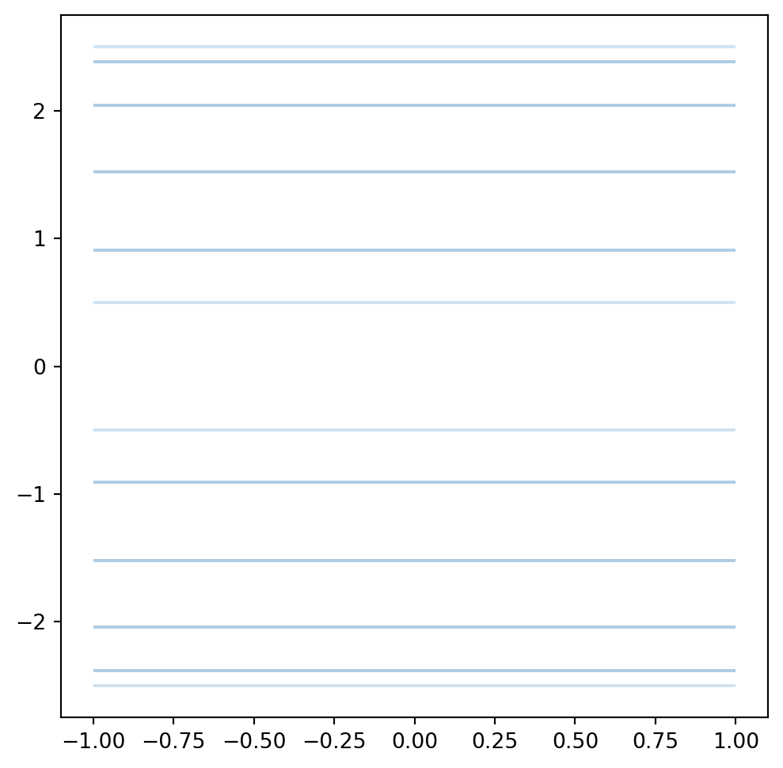
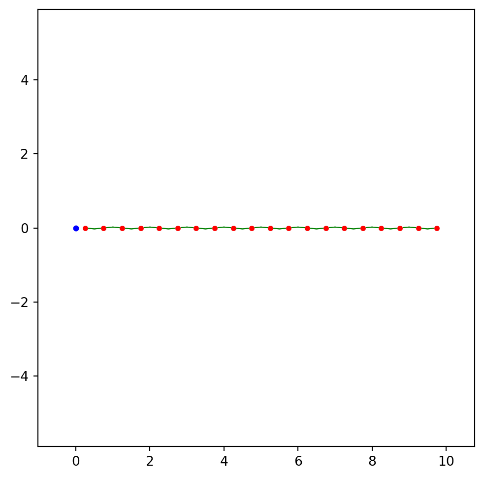
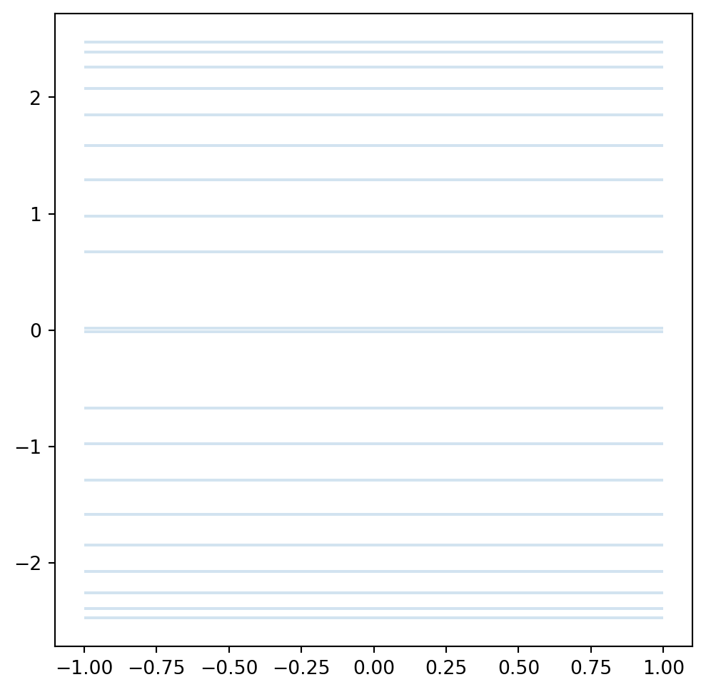
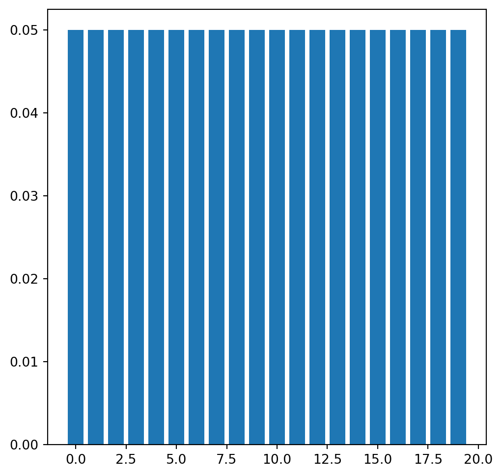
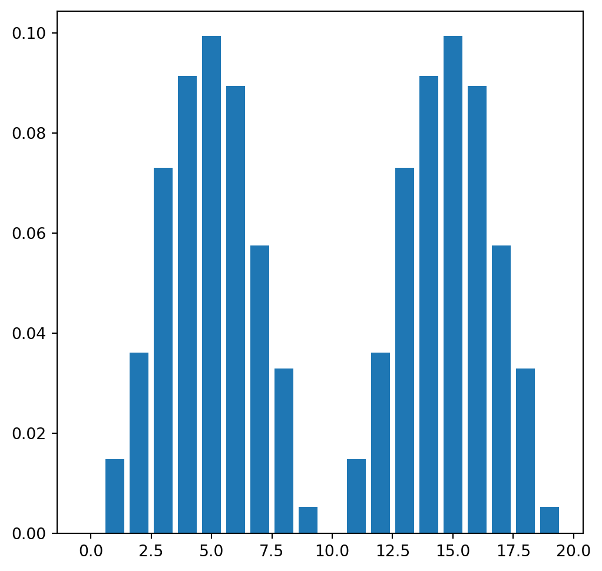
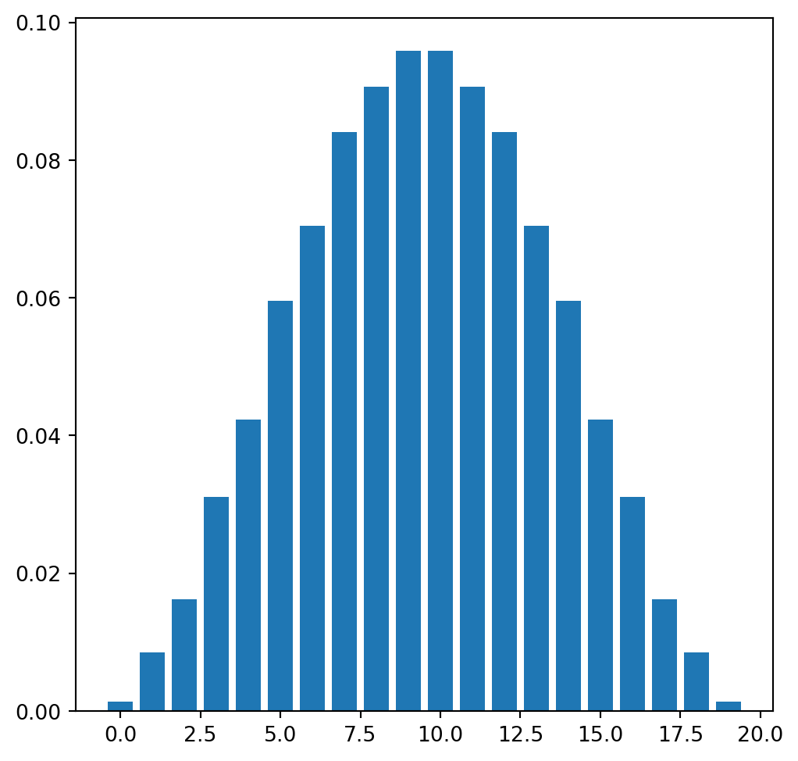
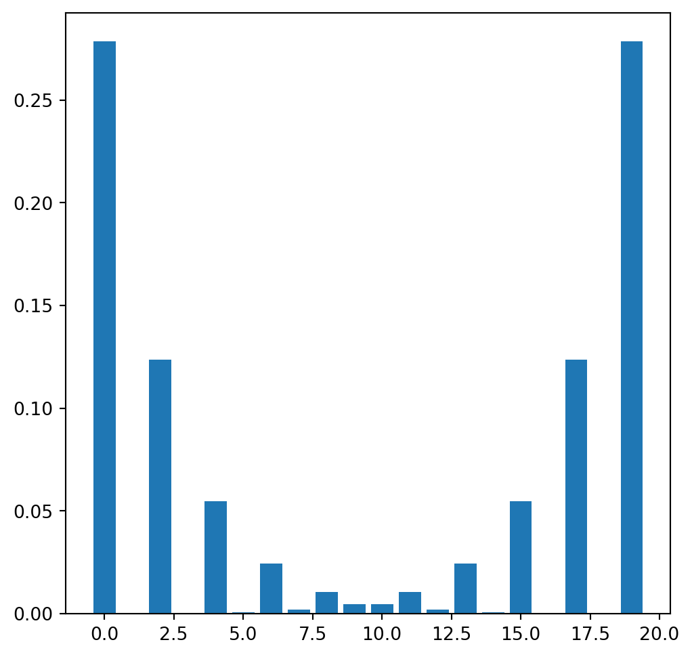
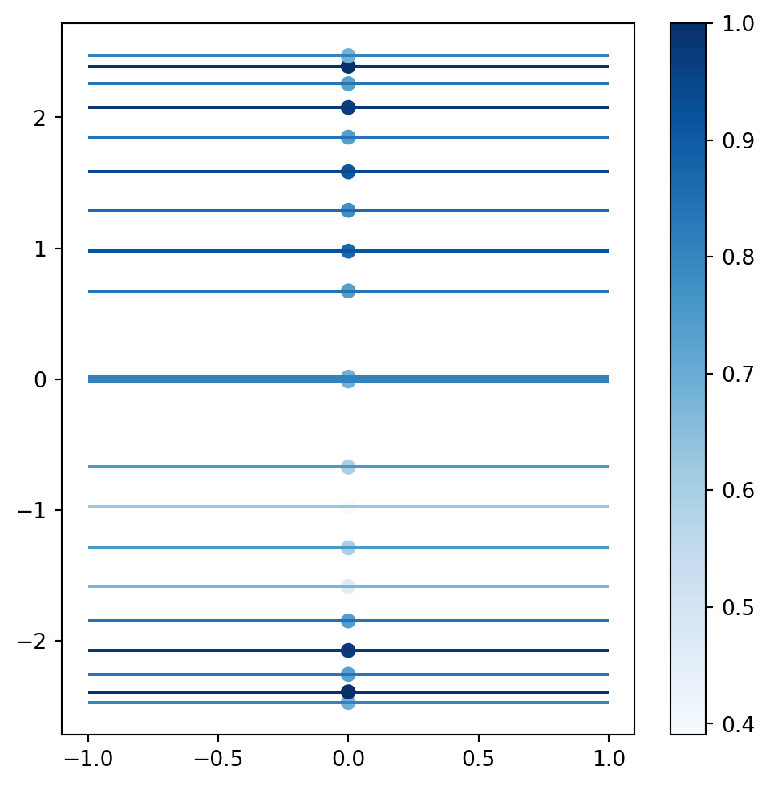

from pythtb import *
from pylab import *8 Modelo SSH
En este clase se implementará el modelo de Su–Schrieffer–Heeger (modelo SSH) y se estudiarán sus propiedades topológicas. Como se hizo en las clases pasadas, todo se hará con la librería Python TB.
Se definen parámetros para tener gráficas de tamaño óptimo.
plt.rcParams['figure.figsize'] = [6,6]El modelo SSH es una cadena unidimensional. Por ello, basta definir un único vector de red base.
a = 1
a1 = array([a])
lat = array([a1])
# Sitios en términos del coeficiente que mutlplica a a1. Hay que definir sitio A y sitio B.
sitioA = array([1/4])
sitioB = array([3/4])
# Se usa un orbital por sitio.
orb = array([sitioA,sitioB])
# Se define el modelo
SSH = tb_model(1,1,lat,orb)
# Añadimos los hoppings
v = 1
w = 1.5
# Hoppings intracelda
SSH.set_hop(v,0,1,[0])
#Hoppings intercelda
SSH.set_hop(w,0,1,[-1])Visualizamos nuestra red.
SSH.visualize(0)
Veamos los niveles de energía en el caso cuando el sistema es finito con \(n_{\text{rep}}\) sitios. Además, añadimos condiciones de frontera periódicas (sitio \(i = 1\) es igual al sitio \(i = N\).) Esto se consigue creando una supercelda con el parámetro glue_edgs puesto en True.
# Se define la supercelda
nrep = 10
sc = SSH.cut_piece(nrep,0,glue_edgs = True)
# Visualizamos el sistema.
sc.visualize(0)
# Obtenemos las energías
E = sc.solve_all()
Para graficar, usamos un truco: graficamos con barras de error.
""" El zeros_like y el E nos grafican puntos de la forma
(0,E). El xerr nos define las barcas de error.
El fmt = ' ' hace que no aparezcan los puntos
graficados y sólo haya barras de error. El
parámetro alpha permite notar la presencia
de degeneraciones. """
errorbar(zeros_like(E),E,xerr = ones_like(E),fmt = ' ', alpha = 0.2)
También podemos estudiar el llenado de los niveles. En esta supercelda tenemos \(2\cdot n_{\text{rep}}\) sitios. Asumimos que hay un electrón por orbital a repartir en los niveles de energía. Asumimos que hay un grado dde libertad de spin. De esta forma, siempre se llenarán \(n_{\text{rep}}\) niveles.
Podemos ver el caso no periódico. En este caso, se rompen muchas degeneraciones y aparecen muchos más niveles.
# Se define la supercelda
scnp = SSH.cut_piece(nrep,0,glue_edgs = False)
# Visualizamos el sistema.
scnp.visualize(0)
# Obtenemos las energías
Enp = scnp.solve_all()
errorbar(zeros_like(Enp),Enp,xerr = ones_like(Enp),fmt = ' ',alpha = 0.2)
También, visualizamos los estados. Para ello, obtenemos los eigenvectores.
E,U = sc.solve_all(eig_vectors = True)PythonTB regresa los eigenvectores por reglones de U. Entonces, la entrada i de U será el eigenvector con el eigenvalor correspondiente a la entrada i de E.
# Por ejemplo, el vector U[0] es el asociado al eigenvalor E[0]
U[0]
# Cada entrada del vector U[0] es el coeficiente que multiplica al orbital de cada sitio. array([-0.2236068+0.j, 0.2236068+0.j, -0.2236068+0.j, 0.2236068+0.j,
-0.2236068+0.j, 0.2236068+0.j, -0.2236068+0.j, 0.2236068+0.j,
-0.2236068+0.j, 0.2236068+0.j, -0.2236068+0.j, 0.2236068+0.j,
-0.2236068+0.j, 0.2236068+0.j, -0.2236068+0.j, 0.2236068+0.j,
-0.2236068+0.j, 0.2236068+0.j, -0.2236068+0.j, 0.2236068+0.j])De la forma de \(U\), podemos extraer el número de niveles y orbitales.
nlevels, norbs = shape(U)Graficamos una gráfica de barras que nos diga el coeificente asociado a cada orbital. Para el nivel más bajo, vemos que el estado se distrbiuye entre todos los orbitales.
bar(range(norbs),U[0]*conj(U[0]))/Users/diegobautistaaviles/anaconda3/envs/pythontb/lib/python3.12/site-packages/matplotlib/cbook.py:1699: ComplexWarning:
Casting complex values to real discards the imaginary part
/Users/diegobautistaaviles/anaconda3/envs/pythontb/lib/python3.12/site-packages/matplotlib/transforms.py:766: ComplexWarning:
Casting complex values to real discards the imaginary part

bar(range(norbs),U[1]*conj(U[1]))
Vemos que en el caso con condiciones no periódicas hay estados que se concentran en los borde.s
Enp,Unp = scnp.solve_all(eig_vectors = True)
nlevelsnp, norbsnp = shape(Unp)bar(range(norbsnp),Unp[0]*conj(Unp[0]))
nb = nlevelsnp//2 - 1
bar(range(norbs),Unp[nb]*conj(Unp[nb]))
Ahora, analicemos la quiralidad del problema. Para ello introducimos el operador de quiralidad \(\Sigma = \sum_{n = 1}^{N}\sigma_{z}\):
σz = array([[1,0],[0,-1]])
ID = diag(ones(nrep))
Σ = kron(ID,σz)De acuerdo a la teoría, el valor esperado del operador de quiralidad debe ser \(0\):
vdot( Unp[0] ,dot(Σ,Unp[0]))(-5.551115123125783e-17+0j)También, calculamos el IPR: \[\text{IPR}(E) = \sum_{\text{site}} |U(\vec{r}_{\text{site}})|^{4}\]
IPR = real(sum(U*conj(Unp)*U*conj(Unp), axis = 1))Podemos usar el IPR como coloración de los niveles de energía.
# Obtenemos una escala de colores.
cmap = matplotlib.colormaps.get_cmap("Blues")
# Tomamos los valores de IPR normalizados.
valores = IPR/IPR.max()
rgba = cmap(valores)
errorbar(zeros_like(Enp),Enp,xerr = ones_like(Enp),fmt = ' ', ecolor = rgba)
scatter(zeros_like(Enp),Enp,c = valores, cmap = "Blues")
colorbar()